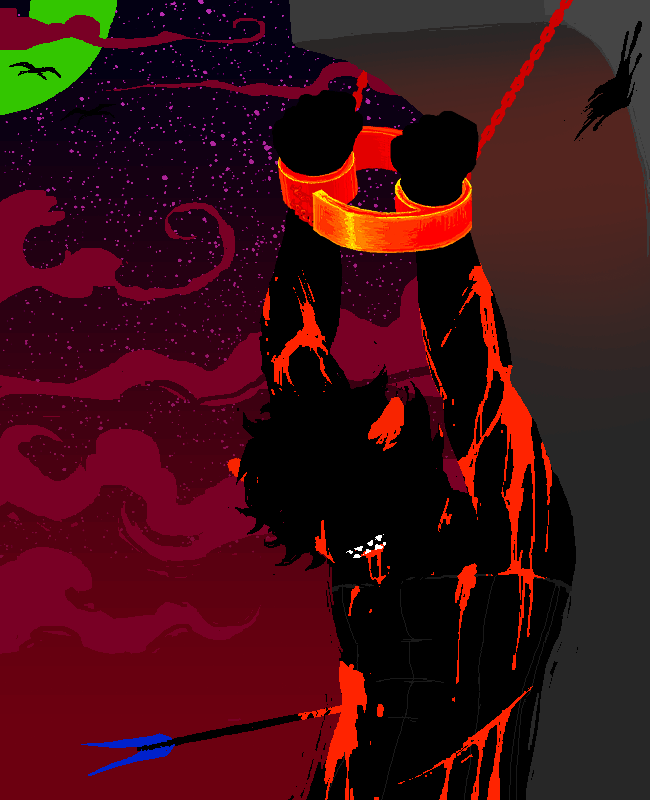
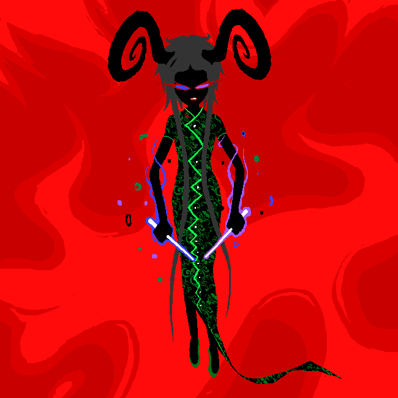
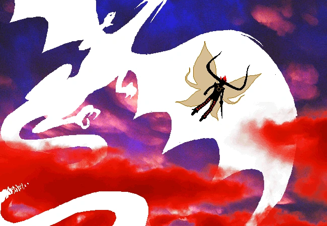
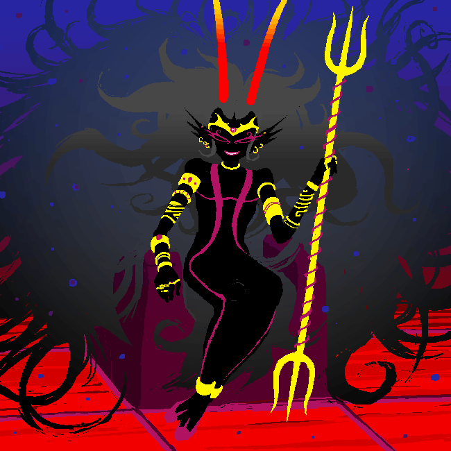

In order from lowest to highest social status within the hemospectrum with blood color listed.

Reffered to as the Signless, the Sufferer, and the Signless Sufferer by me interchangeably within this synopsis,
the Signless Sufferer is the ancestor of Karkat Vantas, the post scratch version of Kankri Vantas, and is
regarded as troll Jesus within the fandom. He fought for equality among all trolls.
Having the mutant blood type of "mutant candy red" places him and his decendant at the bottom of the hemospectrum
system making them likely to be instantly culled if caught by Her Imperious Condescension, which he is. He is captured
and martyred, "When he was finally killed, his anger rung through the cosmos with his last breath. This Vast Expletive was his final sermon".
This act of swearing at your opressors as you are killed is undeniably badass, this act being sumarized in the homestuck epilogues as "a troll died and said Fuck".
Since at the time there was no lusus bred to care for a mutant blood type at the time, the Dolorosa took it upon herself
to raise the Signless Sufferer. The Signless gained his title due to the fact that every troll has a zodiac sign based on
their blood type and being a mutant he has none, though the chains he was held in became the symbol of his decendant and his movement, that
symbol being the cancer sign of the western zodiac. He led his movement with the Disiple, the Psiionic, and the Dolorosa as
his aides.
The Signless is the only one of the ancestors to have any memory of their pre scratch lives, having visions of Beforus and
what it was like which was what prompted his fight for equality. His visions of the peace that trolls could
be capable of gave him hope for his species and inspired his sermons which preached of compassion, forgiveness, equality, and not
randomly murdering those beneath you who you didn't like, real wild ideas
The Sufferer preached that another mutant would come about heralding the end of their planet, "The Second Signless would continue
his work, and lead his people to glory beyond this realm." this "Second Signless" being Karkat Vantas who does help successfully
lead his group of trolls to victory in their game session creating the planet Earth. The Sufferer's remaining followers
"had already made their preparations in the shadows, and when the Second Signless finally came he would have a lusus to raise
him and a sign to his name."

Ancestor of Aradia Megido and post scratch version of Damara Megido, the Handmaid was raised by Doc Scratch to be in the servce of Lord English as "an apparatus of terror and suffering" to make sure the decendants would grow up in a world well prepared to play their game session. In the words of Doc Scratch "She stirred up class warfare and intensified bigotry in whatever era she haunted." Once finished with her work she forcibly recruits the Condese to take her place as "her new master's witch" and dies in the ensuing battle making Her Imperious Condescension take her place as a slave under Lord English

